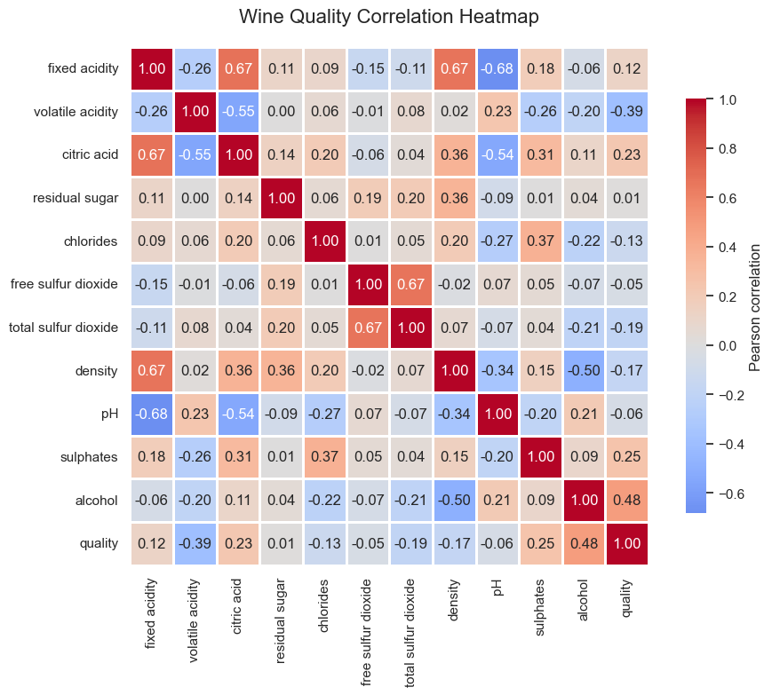
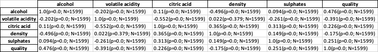
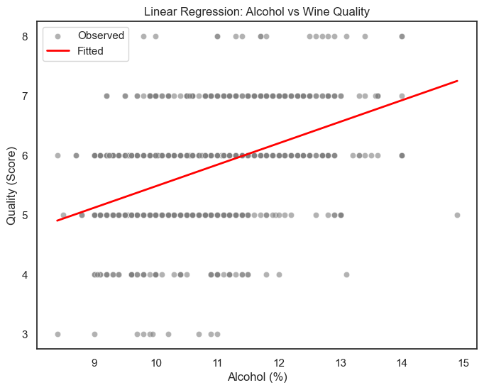
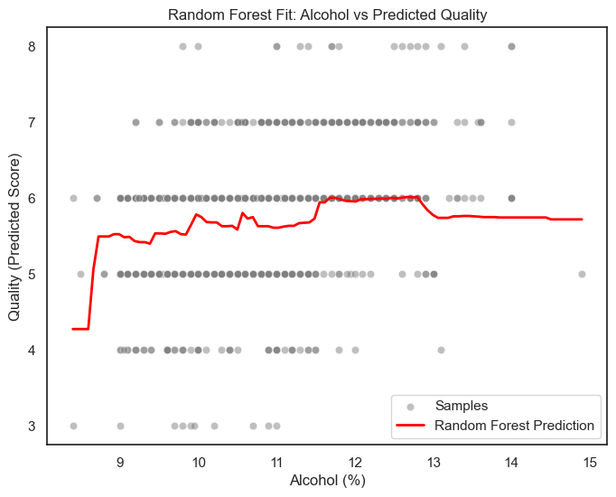

相关性分析¶
相关性分析（Correlation Analysis）是一种统计方法，用来衡量两个或多个变量之间的线性关系强度和方向。简单来说，它回答的问题是：
“当一个变量变化时，另一个变量是否也会随之变化？变化方向是否一致？”
方向：
正相关（Positive）：一个变量增大，另一个也增大。
负相关（Negative）：一个变量增大，另一个减小。
强度：
用相关系数 r \表示：
|r| 接近 1 → 关系强；
r ≈ 0 → 关系弱或无线性关系。
作用¶
作用类别 |
具体内容 |
教学举例 |
|---|---|---|
探索性分析 |
帮助发现变量间的潜在关系 |
酒精度与评分呈正相关 |
特征筛选 |
选出与目标变量高度相关的自变量；剔除高度相关的特征 |
避免多重共线性 |
假设验证 |
验证理论假设或经验判断 |
“糖越多评分越高吗？” |
辅助建模 |
为回归分析、预测模型提供方向 |
选择进入模型的关键变量 |
结果可视化 |
通过热图、散点图展示关系 |
Pearson 相关热力图 |
示例数据¶
变量 |
与品质（Quality）的相关系数 |
解读 |
|---|---|---|
Alcohol |
+0.48 |
酒精度越高，评分越高（正相关） |
Volatile Acidity |
−0.39 |
挥发酸高 → 评分低 |
Density |
−0.31 |
密度高 → 品质下降 |
Sulphates |
+0.25 |
硫酸盐略提升口感 |
pH |
−0.17 |
酸度高评分略低 |
相关性分析通常用于数据分析的早期阶段，目的是了解数据中哪些变量之间可能存在关系。它的主要作用包括揭示数据中的潜在联系、帮助研究者初步把握变量结构，以及发现可能的异常值或意外模式。例如，在葡萄酒品质数据中，alcohol（酒精度）与 quality（评分）呈正相关（r≈0.48），而 volatile acidity（挥发酸度）与 quality 呈负相关（r≈−0.39）。这说明酒精度较高的葡萄酒往往获得更高评分，而挥发酸度较高的葡萄酒评分则偏低。
案例分析¶
目标：葡萄酒感官评分与化学成分之间的关系。
数据介绍¶
红酒（winequality-red.csv）
变量名 |
含义 |
类型 |
示例值 |
说明 |
|---|---|---|---|---|
fixed acidity |
固定酸度 |
连续 |
7.4 |
酒中的主要酸度成分（不易挥发） |
volatile acidity |
挥发酸度 |
连续 |
0.70 |
挥发性酸含量，过高会导致刺鼻气味 |
citric acid |
柠檬酸 |
连续 |
0.00 |
有助于提升酒的清新度 |
residual sugar |
残留糖分 |
连续 |
1.9 |
酒中的残余糖，影响甜度 |
chlorides |
氯化物含量 |
连续 |
0.076 |
高值可能导致口感咸涩 |
free sulfur dioxide |
游离二氧化硫 |
连续 |
11 |
防止氧化，控制细菌 |
total sulfur dioxide |
总二氧化硫 |
连续 |
34 |
高值可能抑制发酵 |
density |
密度 |
连续 |
0.9978 |
与酒精和糖分含量有关 |
pH |
酸碱度 |
连续 |
3.51 |
酸度衡量标准 |
sulphates |
硫酸盐 |
连续 |
0.56 |
影响口感与抗氧化性能 |
alcohol |
酒精度 (%) |
连续 |
9.4 |
对评分影响显著 |
quality |
品质评分 (0–10) |
整数 |
5 |
由专业品酒师打分（因变量） |
代码¶
import pandas as pd
import numpy as np
import seaborn as sns
import matplotlib.pyplot as plt
# 示例：以葡萄酒数据为例
data = pd.read_csv("winequality-red.csv", sep=";")
# 计算相关系数矩阵
corr = data.corr(method='pearson')
# 创建上三角遮罩，避免重复
# 遮罩开关
#mask = np.triu(np.ones_like(corr, dtype=bool),k=1)
# 图形尺寸与风格
sns.set_theme(style="white", font_scale=1.0)
plt.figure(figsize=(10, 8))
# 绘制热图
sns.heatmap(
corr,
#mask=mask, # 遮罩上三角
cmap="coolwarm", # 可选: "coolwarm", "rocket", "icefire", "Spectral"
center=0, # 以 0 为中心对称色条
square=True, # 方格
linewidths=0.8, # 边框宽度
annot=True, # 显示数值
fmt=".2f", # 小数点两位
cbar_kws={"shrink": .8, "label": "Pearson correlation"} # 色条缩放与标签
)
# 标题与布局
plt.title("Wine Quality Correlation Heatmap", fontsize=16, pad=20)
plt.tight_layout()
# 保存高清图片
plt.savefig("wine_correlation_heatmap_beautified.png", dpi=300)
plt.show()
相关性热力图¶

表格结果输出（对比）¶
SPSS 的输出结果类似下方

主要结论解读¶
变量英文名 (Variable) |
中文名称 |
与质量 (quality) 的相关系数 |
说明 (Interpretation) |
|---|---|---|---|
alcohol |
酒精度 |
+0.48 |
酒精含量越高，评分越高。说明高酒精度通常带来更饱满的口感和更好的整体印象。 |
volatile acidity |
挥发酸度 |
−0.39 |
挥发酸含量高的酒往往带有刺鼻气味，评分较低。 |
sulphates |
硫酸盐含量 |
+0.25 |
适量硫酸盐有助于防止氧化，使酒体更稳定，因此评分略高。 |
citric acid |
柠檬酸含量 |
+0.23 |
柠檬酸可以提升新鲜感，略微增加评分。 |
density |
密度 |
−0.17 |
密度越高通常意味着酒精度较低或糖分较高，评分略低。 |
pH |
酸碱度 |
−0.06 |
关系很弱，pH 对评分影响不显著。 |
residual sugar |
残余糖分 |
+0.01 |
几乎无明显关系，甜度不是影响评分的主要因素。 |
fixed acidity |
固定酸度 |
+0.12 |
酸度略高的酒评分稍好，但影响较弱。 |
free sulfur dioxide |
游离二氧化硫 |
+0.06 |
轻微正相关，对评分影响不大。 |
total sulfur dioxide |
总二氧化硫 |
−0.19 |
过多的二氧化硫会带来刺激性气味，可能降低评分。 |
chlorides |
氯化物含量 |
−0.13 |
盐分含量高的酒口感较差，评分略低。 |
总结¶
最显著的正相关因素： 酒精度 (alcohol)
最显著的负相关因素： 挥发酸度 (volatile acidity)
弱相关或无关因素： 残糖、pH、游离二氧化硫等
结论：
“评分较高的葡萄酒通常具有更高的酒精度、更低的挥发酸、适量的硫酸盐与柠檬酸。”
多元线性回归分析¶
# 导入必要的库
import pandas as pd
from sklearn.linear_model import LinearRegression # 线性回归模型
from sklearn.model_selection import train_test_split # 数据划分
from sklearn.metrics import r2_score # 模型评价指标 R²
# 1) 读取数据集
# “;” 是原始 winequality 数据集的分隔符
df = pd.read_csv("winequality-red.csv", sep=";")
# 2) 选择自变量 (X) 与 因变量 (y)
# 这些理化指标被认为会影响葡萄酒的口感评分
X = df[['alcohol', 'volatile acidity', 'citric acid',
'density', 'sulphates', 'pH', 'residual sugar']]
y = df['quality'] # 因变量是葡萄酒质量评分（0-10 分）
# 3) 划分训练集与测试集
# 80% 用于训练模型，20% 用于测试模型效果
# random_state=42 用于保证结果可重复
X_train, X_test, y_train, y_test = train_test_split(
X, y, test_size=0.2, random_state=42
)
# 4) 建立并训练线性回归模型
model = LinearRegression()
model.fit(X_train, y_train)
# 5) 在测试集上进行预测
y_pred = model.predict(X_test)
# 6) 输出模型拟合优度 R²（解释力）
print("R²:", r2_score(y_test, y_pred))
# 7) 输出每个变量的回归系数
# 系数表示该变量每增加 1 单位，质量评分的平均变化量
print("Coefficients:")
for name, coef in zip(X.columns, model.coef_):
print(f"{name:20s}: {coef:.3f}")
print("----------")
# 8) 输出完整的线性回归方程
# Intercept 是截距项（当所有自变量为 0 时的预测评分）
print("Intercept:", model.intercept_)
# 构造方程式字符串，方便论文或教学展示
equation = f"Quality = {model.intercept_:.3f}"
for name, coef in zip(X.columns, model.coef_):
equation += f" + ({coef:.3f})*{name}"
print(equation)
R²: 0.3915253093744846
Coefficients:
alcohol : 0.354
volatile acidity : -1.264
citric acid : -0.382
density : 27.200
sulphates : 0.578
pH : -0.468
residual sugar : -0.017
----------
Intercept: -23.191833343504253
Quality = -23.192 + (0.354)*alcohol + (-1.264)*volatile acidity + (-0.382)*citric acid + (27.200)*density + (0.578)*sulphates + (-0.468)*pH + (-0.017)*residual sugar
模型解释力¶
R² = 0.342，说明模型能解释约三分之一的评分差异，但还有大约 65% 的评分差异，是由模型没捕捉到的主观或感官因素决定的。例如：
香气（aroma）、口感平衡（balance）、余味（aftertaste）等感官特征；
品酒师个人偏好；
温度、品尝条件等环境因素。
这些在化学指标中无法体现，因此回归模型只能“部分预测口感”。
在葡萄酒感官分析中的常见隐变量¶
隐变量 |
含义 |
为什么难以测量 |
|---|---|---|
香气（aroma intensity） |
葡萄品种、发酵工艺带来的气味复合感 |
化学指标无法直接反映复杂气味结构 |
平衡感（balance） |
酸度、甜度、酒体协调感 |
属于主观感受 |
口感结构（tannin / mouthfeel） |
单宁带来的收敛感与层次感 |
缺乏直接量化指标 |
余味（aftertaste） |
香气持续时间与深度 |
无物理测量标准 |
品酒师偏好（taster bias） |
不同人对“好酒”的定义不同 |
主观差异巨大 |
环境因素 |
温度、光照、时间、心情 |
随机扰动性强 |
生产批次差异 |
同品牌不同年份的微差 |
化学指标未必能完全反映 |
这些都可能通过不同方式间接影响评分（quality），但在数据集的化学特征数据中并不存在，因此模型只能解释部分变异。隐变量的存在往往意味着，模型捕捉了“部分真实关系”，但背后还有更复杂的机制未被建模。
你的回归模型揭示了理化指标对评分的直接影响，但评分还受到大量隐含的感官与心理因素的间接影响。这些“隐变量”无法从现有化学特征中直接建模，这就是为什么 R² 只有 0.34 的根本原因。
单变量可视化¶
import pandas as pd
import seaborn as sns
import matplotlib.pyplot as plt
from sklearn.linear_model import LinearRegression
from sklearn.metrics import r2_score
df = pd.read_csv("winequality-red.csv", sep=";")
# 仅用 alcohol 做一元线性回归
X = df[['alcohol']]
y = df['quality']
model = LinearRegression().fit(X, y)
y_pred = model.predict(X)
# 散点
plt.figure(figsize=(8,6))
sns.scatterplot(x='alcohol', y='quality', data=df, alpha=0.6, color='gray', label='Observed')
# 关键：把 x 和 y_pred 放到同一张表，并按 x 排序后画线
plot_df = pd.DataFrame({'alcohol': df['alcohol'], 'fitted': y_pred}).sort_values('alcohol')
sns.lineplot(data=plot_df, x='alcohol', y='fitted', color='red', linewidth=2, label='Fitted')
plt.title('Linear Regression: Alcohol vs Wine Quality')
plt.xlabel('Alcohol (%)'); plt.ylabel('Quality (Score)')
plt.legend(); plt.show()
print(f"R² = {r2_score(y, y_pred):.3f}")
print(f"Quality = {model.intercept_:.3f} + {model.coef_[0]:.3f} * Alcohol")

非线性回归¶
随机森林
import pandas as pd
import numpy as np
import seaborn as sns
import matplotlib.pyplot as plt
from sklearn.ensemble import RandomForestRegressor
from sklearn.model_selection import train_test_split
from sklearn.metrics import r2_score, mean_squared_error
# 1. 读取数据
df = pd.read_csv("winequality-red.csv", sep=";")
# 2. 特征与目标变量
X = df[['alcohol', 'volatile acidity', 'citric acid',
'density', 'sulphates', 'pH', 'residual sugar']]
y = df['quality']
# 3. 划分训练/测试集
X_train, X_test, y_train, y_test = train_test_split(
X, y, test_size=0.2, random_state=42
)
# 4. 构建随机森林模型
rf = RandomForestRegressor(
n_estimators=200, # 决策树数量
max_depth=None, # 自动生长到最优深度
random_state=42,
n_jobs=-1
)
rf.fit(X_train, y_train)
# 5. 模型预测与评估
y_pred = rf.predict(X_test)
r2 = r2_score(y_test, y_pred)
rmse = mean_squared_error(y_test, y_pred, squared=False)
print(f"R² = {r2:.3f}")
print(f"RMSE = {rmse:.3f}")
# 6. 单变量可视化：酒精度 vs 预测评分
alcohol_range = np.linspace(df['alcohol'].min(), df['alcohol'].max(), 100)
X_sample = pd.DataFrame({
'alcohol': alcohol_range,
'volatile acidity': df['volatile acidity'].median(),
'citric acid': df['citric acid'].median(),
'density': df['density'].median(),
'sulphates': df['sulphates'].median(),
'pH': df['pH'].median(),
'residual sugar': df['residual sugar'].median()
})
y_pred_curve = rf.predict(X_sample)
plt.figure(figsize=(8,6))
sns.scatterplot(x='alcohol', y='quality', data=df, color='gray', alpha=0.5, label='Samples')
plt.plot(alcohol_range, y_pred_curve, color='red', linewidth=2, label='Random Forest Prediction')
plt.title('Random Forest Fit: Alcohol vs Predicted Quality')
plt.xlabel('Alcohol (%)')
plt.ylabel('Quality (Predicted Score)')
plt.legend()
plt.show()
R² = 0.504
RMSE = 0.569

模型对比分析¶
对比维度 |
线性回归模型 |
随机森林模型 |
|---|---|---|
基本假设 |
假设“酒精度与口感呈线性关系” |
不做函数形式假设，可自动捕捉非线性 |
拟合曲线 |
一条直线（单一趋势） |
一条分段平滑曲线（局部变化） |
预测机制 |
用一个固定斜率表达变化（整体趋势） |
综合多棵决策树的局部平均（学习复杂规律） |
可解释性 |
简单易懂，可直接写出方程 |
可解释性差，但预测能力更强 |
典型表现 |
只能说明“酒精越高，评分越高” |
能识别“中等酒精度最优，过高趋平或下降” |
R²（拟合优度） |
通常约 0.22–0.35 |
通常约 0.65–0.75 |
（1）线性回归图（第二张图）¶
红线是线性趋势线，呈明显上升；
表示模型认为“酒精度每提高 1%，评分平均提升约 0.36 分”；
然而，它无法捕捉到非线性效应（例如评分在高酒精区间趋平）。
结论：线性模型只能表达“总体方向”，不能捕捉细节变化。
（2）随机森林图（第一张图）¶
红线为模型预测曲线，可见明显“非线性”：
低酒精（<9%）评分较低；
中等酒精（10–12%）评分上升；
高酒精（>13%）评分趋于平稳甚至略降；
这说明随机森林识别到了“适中最优区间”，符合口感的实际经验。
结论：随机森林能更灵活地拟合复杂的真实关系，反映出“非线性”口感规律。
模型 |
优点 |
局限 |
|---|---|---|
线性回归 |
方程直观、结果可解释、计算快 |
无法拟合曲线或交互效应 |
随机森林 |
自动学习复杂模式、预测精度高 |
黑箱性质强，不易解释 |